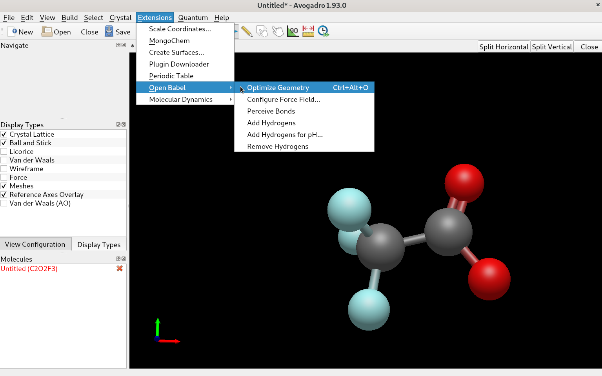

Quantum Mechanics Setup
Initial Coordinates
Our goal is to generate parameters for the trifluoroacetate ion, F3CCOO-. To do this, we will first generate our intial coordinates used in the QM calulations by drawing our molecule in avogadro and optimizing its structure via Open Babel.
On debian-based systems, you can install avogadro by
sudo apt-get install avogadro
After opening avogadro, you can start building your molecule by clicking on the black field. Use the keyboard or the builder menu to construct trifluoroacetate.
Tip
Clicking on an existing bond increases the bond order, right-clicking on an atom deletes it.
You can then use the Open Babel extension to get a reasonable starting geometry.
If the option is greyed out, you can install Open Babel e.g. in a conda environment. If you don’t already have it, you can grab the latest version of Miniconda . Execute the script to install Miniconda, and then create a new environment by typing
conda create -n ffgenopt python=3.9
Answer yes to the prompt and activate new environment. You can then install Open Babel and open avogadro again.
conda activate ffgenopt
conda install -c conda-forge openbabel
Now you should be able to use the extension in avogadro, provided you started it with the ffgenopt environment active. Save the resulting geometry (File -> Export -> Molecule) as an .xyz file.
QM Calculation
Now you can start a QM calculation with your software of choice (such as Psi4 or Gaussian). If you want to use Psi4, you can install it in your ffgenopt environment via
conda install -n ffgenopt -c psi4 psi4
Your QM job script may look something like this:
import psi4,os,importlib
import numpy as np
mem_bytes = os.sysconf('SC_PAGE_SIZE') * os.sysconf('SC_PHYS_PAGES')
mem_gib = 0.75*mem_bytes/(1024.**3)
mem= str(mem_gib)+'gb'
cpu=os.cpu_count()
psi4.set_num_threads(cpu)
psi4.set_memory(mem)
outfile = 'f3ccoo_hess.out'
psi4.core.set_output_file(outfile, False)
psi4.core.IOManager.shared_object().set_default_path('/tmp/')
inp_mol = psi4.geometry("""
-1 1
C -1.60392 -0.46377 0.02162
C -0.36006 0.41501 0.05794
F -1.97453 -0.73962 -1.24327
F -1.40553 -1.63727 0.65260
F -2.65285 0.13123 0.62146
O 0.71408 -0.17910 -0.39895
O -0.37609 1.60231 0.32048
""")
mp2_e, mp2_wfn = psi4.optimize('mp2/cc-pvdz', molecule=inp_mol, return_wfn = True)
hess, wfn = psi4.driver.hessian('mp2/cc-pvdz', return_wfn = True)
dipder = wfn.variables().get("CURRENT DIPOLE GRADIENT", None)
if dipder is not None:
dipder = np.asarray(dipder).T
hess_arr = np.asarray(hess)
geom = np.asarray(inp_mol.geometry())
masses = np.asarray([inp_mol.mass(i) for i in range(inp_mol.natom())])
ir_labels = inp_mol.irrep_labels()
basis = wfn.basisset()
vibinfo, vibtext = psi4.driver.qcdb.vib.harmonic_analysis(hess_arr, geom,
masses, basis, ir_labels, dipder)
symbols = [inp_mol.symbol(at) for at in range(inp_mol.natom())]
with open(outfile, 'a') as f:
print(psi4.driver.qcdb.vib.print_vibs(vibinfo, normco='q', ncprec=5), file=f)
with open("f3ccoo.molden", 'w') as handle:
handle.write(psi4.driver.qcdb.vib.print_molden_vibs(vibinfo, symbols, geom,
standalone=True))
This file requests a geometry optimization and subsequent frequency calculation
at the mp2/cc-pvdz level of theory, printing the normal modes at the end of the
output file, as well as writing them in a molden format for visualization.
The inp_mol block contains the charge, electronic multiplicity as well as
the starting geometry of your molecule, in this case taken from the avogadro
output.
You may want to change the value of set_default_path() (i.e. the
directory where the temporary files are written), since tmp is often
limited in size.
Save the resulting file using a descriptive name, for instance f3ccoo.py.
If your conda env is activated, you can start calculating the optimized
geometry and the frequencies via
python3 f3ccoo.py
Once the calculation finishes, inspect the resulting frequencies in the output file and make sure none of them are imaginary. If that is the case, then you can proceed to the next part to generate the initial set of parameters. Alternatively, you can skip ahead to using FFGenOpt. If you do see imaginary frequencies, you can inspect the normal modes corresponding to those numers with molden. To install molden on debian-based systems use the commands
sudo apt-get install snapd
sudo snap install core
sudo snap install molden
Now you can open the molden-formatted normal mode file by
molden f3ccoo.molden
Extract the final geometry from the QM output into an .xyz file and open it with avogadro. Using the bond-centric atom manipulation tool, change the value of the internal coordinate (e.g. the F-C-C-O dihedral) slightly and start a geometry optimization with these coordinates. Rinse and repeat until only positive frequencies are reported in the output.